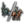
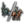
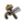
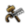
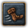
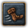

陸戰就是是部署和調動一切軍事資源對敵作戰，一般情況下，這會直接影響戰爭的結果。在歐陸風雲4中絕大部分戰鬥都是以陸地展開的，當然海戰也很重要，但是失去陸權才是遊戲中戰爭勝敗的通常原因。因此，陸戰的藝術意義重大，其複雜性我們將在這裏儘可能充分地加以討論。
戰鬥介面
一場戰鬥不僅僅是由一些簡單的修正或者擲骰子的數字所決定的，而是通過一個複雜的模擬，讓雙方的軍隊部署在兩排陣地中，讓陸軍單位與面前的敵人作戰，同時在允許的情況下，敵人側翼的陸軍單位（有足夠高的側翼距離）可以在不同的位置間進行移動。與此同時，還要考慮撤退機制、消滅或擊潰士氣低落的單位、進行增援已經部署預備隊。
可惜的是，歐陸風雲4的戰鬥系統，其戰鬥介面並不能非常直觀或明確地，讓玩家看到哪個部隊正與哪個部隊戰鬥或一支部隊正向什麼地方移動。因此，有必要通過本章內容來明確決定陸戰勝利的各要素。

地形

每個省份的地形都顯示在地形和簡易地形地圖模式。地形模式展示了一張自然外觀的地圖，而簡易地形模式的色彩代表了每一個省份的地形類別；如果有需要，兩者都有工具提示來顯示當前的地形類別、堡壘等級以及當前的冬季狀態。一些地形對在該省運動的軍隊增加了移動花費的懲罰，同時對攻擊方增加了一種負面的地形修正，不同類型的地形有不同的修正效果。
這裏列出了地形的類型和它們給予的修正效果。


穿越懲罰
穿越懲罰將減少攻擊方所有骰子得數，情況如下：
- 穿越河流: 所有骰子得數 -1。
- 兩省份之間的河流會在省份窗口中以一個小河流標誌顯示，將鼠標懸停於其上將可以看到這個省份與哪個省份之間需要跨河。
- 穿越海峽: 所有骰子得數 -2。移步海峽介面查看所有海峽列表。
- 兩棲登陸: 所有骰子得數 -2。
- 這種情況包括了從海上發起攻擊和直接登陸港口作戰。
當攻擊方軍隊來自複數個省份時，任意一支部隊遭到的穿越懲罰都會由全軍承擔。如果攻擊方將領的機動性比防守方將領的高，則攻擊方不會受到任何穿越懲罰。對將領機動性的檢定是每日都會進行的，所以，即使高機動將領總有機會力挽狂瀾——甚至是在他沒有第一時間到達戰場的情況下。
圍城期間爆發的戰鬥
通常來說，「攻擊方」被定義為相對於進入一個已有敵方單位所在省份的軍隊，而「防禦方」則定義為早於「攻擊方」之前就已經佔據該省份的軍隊。然而，當一隻軍隊正在圍攻一個有堡壘的省份並且該省份未被攻佔時遭到堡壘省份所有者軍隊或其盟友軍隊的攻擊，則雙方的角色就會對調：圍攻堡壘的一方會被判定為「攻擊方」， 同時企圖破壞圍攻的一方會被判定為「防禦方」。進攻和地形懲罰都適用於「攻擊方」, 同時不論進攻的「防禦方」將領有多少機動點數，穿越河流和穿越海峽的攻擊懲罰都判定無效。
玩家可以在建造堡壘時考慮到這一點，同時也可以在戰爭以此來決定優先圍攻哪個堡壘或去解救已方被圍攻堡壘。必須要注意的是僅適用於帶有堡壘的省份。
戰鬥部署
軍團組成
- 主條目：陸軍#不同兵種的配比
為了保障軍隊的作戰效率最大化，適當的軍團組合（步騎炮比例搭配）是非常重要的。
戰線寬度
戰線寬度（英文：Combat width，舊譯：戰場寬度、戰鬥寬度）決定一場戰鬥會有多少單位能有效的參加戰鬥。如果有足夠的單位，每1戰線寬度都能在前後兩排分別站立1個單位。基礎戰線寬度值為15。[1]隨着軍事科技的進步，戰線寬度會不斷擴大，這使得各國能有效使用更多士兵參加戰鬥。除了美洲土著以外的所有國家的科技都從2或3級開始，所以他們的起始戰線寬度是20。一場戰鬥中對陣雙方的戰鬥寬度會默認使用參與者中戰鬥寬度較大一方的值。
這是不同軍事科技下戰線寬度的對應表格。
| 0級 | 2級 | 5級 | 6級 | 8級 | 11級 | 14級 | 16級 | 18級 | 20級 | 22級 | 24級 | 26級 | |
| 15 | 20 | 22 | 24 | 25 | 27 | 29 | 30 | 32 | 34 | 36 | 38 | 40 |
排兵佈陣
陸軍單位陣型的排列是由AI自動完成的，玩家無法介入。本節解析AI的佈陣策略。通過不斷的觀察和實驗，我們得出了一個共同的結論，即遊戲中的排兵佈陣取決於每支部隊（1K）的兵力和總體的陸軍兵種組成。
下圖中，小框裏面打叉代表步兵，小框裏面一條斜槓代表騎兵，小框裏面帶一點代表炮兵。
註：本段落在參考英文wiki的基礎上，由中文百科群成員實驗後修改完成。
佈陣原則
- 前排先佈置步兵，再佈置騎兵。
- 後排先佈置炮兵，再佈置步兵和騎兵。
- 騎兵從兩邊向中央佈置，步兵和炮兵從中央向兩邊佈置。
- 佈置方案以戰場中線為基準儘可能的對稱。
- 步兵和騎兵在後排佈置時只能佈置在相同兵種之後，除非一方數目不足而另一方數目過量。
步兵不足時的佈陣

若步兵數小於戰線寬度的一半，則按以下規則佈陣。
- 將步兵從中央開始佈置在前排。
- 將騎兵從中間向兩邊的佈置在前排的兩側剩餘位置。
- 將炮兵從中央開始佈置在後排，但不得超過前排的寬度，即炮兵的前方必須有騎兵或步兵。
- 若後排仍有剩餘空位：
- 若第2步中騎兵數目足以充滿前排，則將剩餘騎兵佈置在後排的兩側，從兩邊向中央部署。
- 若第2步中騎兵不足以填滿前排，則將剩餘炮兵從中央向兩邊的佈置在前後兩排，使前後兩排寬度相同或前排略寬1個格子。
步兵充足時的佈陣
步兵數大於等於戰場寬度的一半，則按以下規則佈陣。
- 將步兵從中央開始佈置在前排，左右對稱，但在兩邊各空出 min{ 戰場寬度/4 , 騎兵數/2 } 的位置(此處除法為整除，小數部分捨去)。
- 將騎兵佈置在第1步中前排空出的位置中。
- 將炮兵佈置在後排中央。
- 若後排仍有空位：
- 空位對應的前排位置為步兵的，此位置優先放置步兵。
- 空位對應前排位置為騎兵的，此位置優先放置騎兵。
- 若步兵或騎兵一方數目不足，則數目充足的一方可跨過"步騎分界線"向另一方位置部署。
戰鬥過程
當兩支敵對的軍團在一個省份相遇時，戰鬥就會發生直到其中一支被擊潰或全軍覆沒。
戰鬥概念
在介紹之前，重溫並補充一些本節的概念：
- 軍團：玩家和AI操控的作戰單位，由許多部隊編成。
- 部隊：遊戲中的基本作戰單位，人數上限為1000。多支部隊可組成軍團提高戰鬥力。
- 攻擊方/防禦方：「攻擊方」被定義為相對於進入一個已有敵方單位所在省份的軍隊，而「防禦方」則定義為早於「攻擊方」之前就已經佔據該省份的軍隊。
- 我方/敵方：此為戰鬥概念。EU4為即時戰略遊戲，也就是說，戰鬥中不存在戰棋遊戲中「你只攻擊，我只挨打」的情況。當一支部隊猛烈打擊對手時，對方部隊也會予以反擊，雙方的攻擊是同時計算的。因為，為了防止與上述的攻擊方/防禦方混淆，這裏將兩支交手的軍團簡稱為我方和敵方。
- 參戰部隊/未參戰部隊/參與戰鬥的部隊：在一場戰鬥中，受戰線寬度和側翼攻擊範圍限制，並非所有派過去的部隊都能第一時間打擊敵人。因此，將單位時間內對對方部隊輸出的部隊叫參戰部隊；與此相對應的，在戰鬥中，但沒有打擊對方部隊的，叫未參戰部隊，這些部隊大多作為預備役，在參戰部隊敗下陣後會支援前線；而該部隊無論參戰或是不參戰，不管在不在戰場上，只要其身處戰鬥，都叫參與戰鬥的部隊，這些部隊每天都會受到士氣懲罰。
戰鬥畫面
如下為陸戰畫面，其中：
紅框：撤退標識，當戰鬥經過兩輪火力-衝擊階段（12天）時，玩家可點擊此按鈕，將部隊有序撤離。
綠框：參戰將領信息及將領特質。
黃框：部分決定骰子點數的變數，例如骰子，將領點數，地形等。
藍框：參戰軍團的平均士氣。注意與下文中平均最大士氣區分開。
紫框：參戰軍團的平均訓練度，平均最大士氣和軍事戰術。
淺橙框：前排步兵/騎兵數量及全部炮兵的數量。騎兵左上角的加/減號代表前排騎兵比例是否合適。
粉框：上麵粉框代表雙方軍團的戰鬥部署。不同國家的部隊用不同顏色標識。隨着人員傷亡，小框顏色會逐漸變淺。將鼠標懸停在小框上，則可顯示該部隊的具體信息：實時人數、士氣，訓練度等。而將鼠標懸停在下麵粉框時，可查看本場戰鬥的戰線寬度。
上文出現的概念均於下文解釋。

階段
戰鬥由一系列持續三天的階段組成，在火力與衝擊階段之間交替進行，戰鬥一開始為火力階段。一般來說，步兵和炮兵在火力階段能打出大量輸出，而騎兵能在衝擊階段大殺四方。
攻擊目標
攻擊目標由AI自行選擇，前排部隊和後排炮兵可以攻擊任何在其攻擊範圍內的敵軍。單支部隊只可以攻擊一支部隊，但卻可以承受多支敵方部隊的攻擊。一般情況下前排部隊只與其正面的敵人交戰，但如果其正面沒有部隊迎戰，前排部隊會在側翼攻擊範圍內打擊其正面相鄰區域的敵軍。因此，在陸戰中，其他條件不變下，頂滿戰線寬度的軍團，其優勢要比沒有頂滿的強。戰鬥中其正面沒有敵人的部隊，在側翼攻擊範圍允許下，可以攻擊周邊敵軍部隊，這樣敵軍部隊會遭受多支部隊打擊，增加戰損。
有時，如果能造成敵軍更多損失的話，前排部隊有時候也會不顧一切地執行側翼攻擊。這種不顧一切執行側翼攻擊的狀況，通常會發生在敵軍全部為炮兵或者陸軍兵種十分落後的情況下。
後排的步兵和騎兵部隊不能發動進攻，他們只有在其正前方的我方部隊敗退後頂上前排。炮兵是唯一可以從後排發起攻擊的兵種，但在後排攻擊的炮兵只會造成50%的基本戰損。大時代能力 「改良炮兵射程」會增加20%後排炮兵傷害，能將該數字提升至70%。
「改良炮兵射程」會增加20%後排炮兵傷害，能將該數字提升至70%。
下圖顯示了攻擊正面部隊、攻擊側翼部隊以及未參戰三種情況：

戰鬥系統
EU4的戰鬥系統使用四個公式來計算參戰部隊的人員傷亡和士氣打擊：
在如下公式中，[math]\displaystyle{ Atk }[/math]代表我方，[math]\displaystyle{ Def }[/math]代表敵方。若無特殊說明，以下公式均代入我方視角。
骰子點數(Pips)
每個階段（持續三天的火力/衝擊）開始，雙方都會擲骰子。產生的點數將直接影響部隊在這個階段中，每天對敵軍造成的士氣打擊和人員傷亡。
骰子計算公式如下：
[math]\displaystyle{ Pips_{T} = Roll + \max (0, Leader_{Atk} - Leader_{Def}) + Pips_{Atk} - Pips_{Def} - Terrain }[/math]
其中：
- 骰子 ([math]\displaystyle{ Roll }[/math])：一個0-9的隨機數，每個階段開始時投擲一次。
- 將領屬性 ([math]\displaystyle{ Leader }[/math])

 ：領軍將領的屬性分別影響相應階段（火力/衝擊）。
：領軍將領的屬性分別影響相應階段（火力/衝擊）。 - 我方/敵方部隊陸軍單位屬性 ([math]\displaystyle{ Pips }[/math])


 12
12 12：我方/敵方部隊的攻擊/防禦點數（火力/衝擊/士氣）。請注意，這是兵種自帶的點數，要與下文說的我方部隊傷害區分開來。後排炮兵會將其50%的衝擊和火力防禦點數（不為整數則就近取小值。16級炮兵開始提供一點防禦火力點數，29級炮兵提供一點防禦衝擊點數）賦予到該支炮兵前的那隻部隊上。
12：我方/敵方部隊的攻擊/防禦點數（火力/衝擊/士氣）。請注意，這是兵種自帶的點數，要與下文說的我方部隊傷害區分開來。後排炮兵會將其50%的衝擊和火力防禦點數（不為整數則就近取小值。16級炮兵開始提供一點防禦火力點數，29級炮兵提供一點防禦衝擊點數）賦予到該支炮兵前的那隻部隊上。 - 地形修正 ([math]\displaystyle{ Terrain }[/math])：惡劣地形會給攻擊方部隊造成進攻懲罰。
基礎戰損(Multipliers)
在清算最後的人員傷亡和士氣打擊前，系統還會計算單支部隊造成的「基礎戰損」：
[math]\displaystyle{ Multipliers = \frac{Strength}{1000} \cdot \frac{Damage }{Tactics} \cdot (1 + CombatAbility) \cdot (1 + Discipline) \cdot (1 + \frac{Round}{100}) }[/math]
其中：
- 我方部隊人數 ([math]\displaystyle{ Strength }[/math])
 ：若我方部隊人數不滿員，輸出傷害按比例減少。
：若我方部隊人數不滿員，輸出傷害按比例減少。 - 我方部隊傷害 ([math]\displaystyle{ Damage }[/math])：此項由軍事科技等級及修正（步兵火力/騎兵衝擊一類）決定。詳見 軍事科技對陸軍的累計加成效果。
- 敵方部隊軍事戰術最終值 ([math]\displaystyle{ Tactics }[/math])
 ：敵方部隊的軍事戰術最終值。
：敵方部隊的軍事戰術最終值。 - 我方部隊作戰能力加成 ([math]\displaystyle{ CombatAbility }[/math])


 ：我方部隊的步兵/騎兵/炮兵作戰能力加成。
：我方部隊的步兵/騎兵/炮兵作戰能力加成。 - 我方單位訓練度 ([math]\displaystyle{ Discipline }[/math])
 ：我方部隊的訓練度。
：我方部隊的訓練度。 - 交戰軍團戰鬥時間 ([math]\displaystyle{ Round }[/math])
 ：當軍團開始戰鬥時，每天的基礎戰損增加[math]\displaystyle{ 1\% }[/math]，第一天以[math]\displaystyle{ 1\% }[/math]開始。
：當軍團開始戰鬥時，每天的基礎戰損增加[math]\displaystyle{ 1\% }[/math]，第一天以[math]\displaystyle{ 1\% }[/math]開始。 - 後排炮兵輸出時，此值應再乘以[math]\displaystyle{ 50\% }[/math]。大時代能力
 「改良炮兵射程」會增加20%後排炮兵傷害，能將該修正提升至[math]\displaystyle{ 70\% }[/math]。
「改良炮兵射程」會增加20%後排炮兵傷害，能將該修正提升至[math]\displaystyle{ 70\% }[/math]。
人員傷亡(Casualties)
在骰子點數和基礎戰損計算完畢後，系統立刻計算敵方部隊受我方部隊打擊下的傷亡人數。需要注意的是，這是一支敵方部隊受一支我方部隊打擊的計算公式，若該敵方部隊受到多支我方部隊打擊，則將每一項分開計算，並最後加在一起：
[math]\displaystyle{ Casualties=(15+5\times Pips_{T})\cdot Multipliers\cdot(1+Damage_{Mod})\cdot(1+DamageRev_{Mod}) }[/math]
其中：
- 骰子點數([math]\displaystyle{ Pips_{T} }[/math])：第一個公式採用火力/衝擊點數後的計算結果。
- 基礎戰損([math]\displaystyle{ Multipliers }[/math])：第二個公式的計算結果。
- 我方部隊階段修正 ([math]\displaystyle{ Damage_{Mod} }[/math])

 ：我方部隊增加火力與衝擊傷害的修正。
：我方部隊增加火力與衝擊傷害的修正。 - 敵方部隊階段修正 ([math]\displaystyle{ DamageRev_{Mod} }[/math])

 ：敵方部隊降低火力與衝擊傷害的修正。
：敵方部隊降低火力與衝擊傷害的修正。 - 需要注意的是，當炮兵暴露於前排，受到對面部隊直接攻擊時，其會受到雙倍的人員傷亡。
士氣打擊(MoraleCasualties)
在骰子點數和基礎戰損計算完畢後，系統立刻計算敵方部隊受我方部隊進攻下的士氣打擊。需要注意的是，這是一支敵方部隊受一支我方部隊打擊的計算公式，若該敵方部隊受到多支我方部隊打擊，則將每一項分開計算，並最後加在一起。並且，在軍團和戰鬥介面中，玩家無法看到單支部隊的士氣值，只能看到所有部隊士氣值的平均值：
[math]\displaystyle{ MoraleCasualties = (15 + 5 \cdot Pips) \cdot Multipliers \cdot (1 + DamageModifier)\cdot (1 + DamageReceived) \cdot\frac{MaxMorale}{540} + PassiveMoraleDamage \cdot ( 1 - RO) }[/math]
其中：
- 骰子點數([math]\displaystyle{ Pips_{T} }[/math])：第一個公式採用士氣點數後的計算結果。
- 基礎戰損([math]\displaystyle{ Multipliers }[/math])：第二個公式的計算結果。
- 我方部隊士氣最大值([math]\displaystyle{ MaxMorale }[/math])：我方部隊士氣的最大值。一般情況下，戰鬥中此值可視為固定值。
- 我方士氣打擊調整 ([math]\displaystyle{ DamageModifier }[/math])：我方的士氣打擊調整值
- 敵方受到士氣打擊調整 ([math]\displaystyle{ DamageReceived }[/math])：敵方的受到士氣打擊調整值
- 士氣損耗 ([math]\displaystyle{ PassiveMoraleDamage }[/math])：所有參與戰鬥的部隊每天敵方最大士氣1%的士氣損耗。未參戰部隊會受到每天2%敵方最大士氣的士氣損耗，故而將精銳部隊置於後方非常不划算。但是，當陸軍職業度達到80%後，該值可下降50%([math]\displaystyle{ RO }[/math])。
- 需要注意的是，當炮兵暴露於前排，受到對面部隊直接攻擊時，其會受到雙倍的士氣打擊。
有幾個獨特的國家理念可以減少火力和衝擊階段受到的損傷、加強輸出的傷害：
增加火力傷害的的理念：
| 傳統 | 理念 | 獎勵/野心 | 政策 | |
|---|---|---|---|---|
| +15% | — |
|
— | — |
| +10% | — |
|
|
— |
| +5% | — |
|
— | — |
增加衝擊傷害的的理念：
| 傳統 | 理念 | 獎勵/野心 | 政策 | |
|---|---|---|---|---|
| +15% | — |
|
— | — |
| +10% |
|
|
|
— |
信仰  賈法里派的伊斯蘭教國家也會獲得
賈法里派的伊斯蘭教國家也會獲得  +10% 衝擊傷害
+10% 衝擊傷害
減少火力傷害的的理念：
| 傳統 | 理念 | 獎勵/野心 | 政策 | |
|---|---|---|---|---|
| -15% | — |
|
— | — |
| -10% |
|
|
— | — |
減少衝擊傷害的的理念：
| 傳統 | 理念 | 獎勵/野心 | 政策 | |
|---|---|---|---|---|
| -15% | — |
|
— | — |
| -10% |
|
|
|
— |
| -5% | — |
|
— | — |
信仰  宰德派的伊斯蘭教國家也會獲得
宰德派的伊斯蘭教國家也會獲得  -10% 受到的衝擊傷害
-10% 受到的衝擊傷害
信仰  胡斯派的國家也會獲得
胡斯派的國家也會獲得  -5% 受到的衝擊傷害
-5% 受到的衝擊傷害
'Zombie' regiments
In principle, units on the frontline retreat and are replaced by reserve units when they reach either 0 morale or 0 regiment strength. However, before patch 1.34 this mechanic did not function when regiment strength reaches 0 before morale reaches 0 during the first 12 days of a battle. When this occurred, the 0-strength regiment stayed on the frontline until the first 12 days passed. This remains true even when the 0 strength regiment reaches 0 morale during the first 12 days.
Overkill
When a regiment deals morale or kill casualties to a target that has less morale or regiment strength remaining, the excess morale or kill casualties are not distributed to other units. Thus a regiment that has 0.01 morale left after a phase will absorb an entire other day of kill & morale casualties.
戰鬥結果
在戰鬥過程中，前排部隊人數或士氣一旦歸零，系統判定此部隊即喪失作戰能力，將其移出戰場，其位置由周邊部隊補上，優先選擇正後排的步兵/騎兵，其次是原位置左邊或右邊的部隊。（但在人數歸0的情況下，系統沒有將此部隊除名，不過軍團介面中此部隊的人數顯示為0）如果此時戰場上存在未參戰步兵/騎兵部隊，即將其從軍團前排側翼補上以維持戰鬥。
當戰鬥中的一方軍團總人數（極為少見）或士氣率先降為0，系統判定該方失敗。在沒有全殲的情況下，這支軍團會撤退到其控制區內休養生息，以便投入下一場戰鬥。
大部分情況下，失敗方會遭受嚴重的人員損失，但不至於被悉數殲滅。但在以下三個情況中，敵方軍團可以被全殲：
- 開始戰鬥時敵方軍團士氣為0。
- 戰鬥結束時，我方軍團存活人數（並非人數上限）為敵方的10倍及以上，並且我方軍事科技至少比敵方的高2級。
- 在兩輪火力-衝擊階段（12天）內，將敵方軍團前排投入戰鬥（即不顯示為「處於預備隊」）的部隊士氣降到0的同時，我方軍團存活人數（並非人數上限）為敵方的2倍及以上。
戰鬥統計
以下介紹上述公式中出現的概念。其中大部分都可以從陸軍單位和陸軍介面找到詳細介紹。
軍事戰術
軍事戰術會減少己方部隊在戰鬥中受到的傷害。軍事科技的提高會提高軍事戰術的基礎值，而訓練也會增加軍事戰術。軍事戰術的最終值為：
[math]\displaystyle{ 军事战术最终值 = 军事战术基础值 \times 训练度 }[/math]
| 0 級 | 4 級 | 6 級 | 7 級 | 9 級 | 12 級 | 15 級 | 19 級 | 21 級 | 23 級 | 24 級 | 30 級 | 32 級 | |
|---|---|---|---|---|---|---|---|---|---|---|---|---|---|
| 0.5 | 0.75 | 1.0 | 1.25 | 1.5 | 1.75 | 2.0 | 2.25 | 2.5 | 2.75 | 3.0 | 3.25 | 3.5 |
屬性點數
每支部隊的進攻和防禦能力體現為三種數值：火力、衝擊和士氣。攻擊能力使用黃點表示，防禦能力使用綠點表示。在不同的戰鬥階段，每支部隊都使用自身的攻擊能力輸出傷害，使用自身的防禦能力抵禦傷害。[2]
由此，我們可以推斷出，高攻擊力在玩家擁有比對手更多兵力時比高防禦力更有價值，反之則反。
這是因為，一支數量龐大，作戰寬度更大的軍隊，勢必擁有更寬廣的殺傷區，這時高攻擊力可以在相同時間內對敵方軍隊造成更大的傷亡。
如果，敵方軍隊由10隊步兵和10隊炮兵組成，而玩家手中只有10隊步兵時，高防禦力將顯著減少玩家在陸戰中的損耗——因為防禦力可以同時減少來自步兵和炮兵遠射的攻擊。
一言蔽之，玩家如果打算供養一支大軍，炮兵和步兵的攻擊力越高越好，因為多數情況下，防禦方的每一團要承受來自於進攻方兩個團（步兵和炮兵）的進攻。
在炮兵出現早期，（比如，7級軍事科技時，一個炮兵團有1點衝擊修正，沒有火力修正；一個步兵團有0.35火力修正和0.5衝擊修正）推薦使用高炮兵比率配合高衝擊修正的將領。這樣，玩家會在衝擊階段對敵軍造成的傷害將會大大提升。反過來說，在遊戲前期通過堆防禦力來減少來自衝擊階段的傷害是可取的。
在7級軍事科技之後，無論是游牧民族還是開化國家，如果玩家養得起一支與攻擊寬度相等的炮兵，一個火力修正高的將領配合火力攻擊力為2的步兵和火力衝擊均為1的炮兵是比較合適的。
側翼攻擊範圍
側翼攻擊範圍決定了一支部隊可能進行側翼攻擊的攻擊範圍（距離）。1點側翼攻擊範圍代表該部隊能夠攻擊其正面部隊左方或右方1格的部隊，以此類推。後排炮兵在計算距離時會投影到前排部隊上，所以炮兵的側翼攻擊範圍概念和步兵/騎兵是一樣的。
步兵基本側翼攻擊範圍為 1，騎兵/炮兵為 2。
隨着遊戲的進行，軍事科技會逐漸增強部隊的側翼攻擊範圍。 下表介紹的就是軍事科技等級對側翼攻擊範圍的影響。
| 0 級 | 10 級 | 18 級 | 23 級 | 28 級 | 30 級 | |
|---|---|---|---|---|---|---|
| 0 | +25% | +50% | +100% | +125% | +150% | |
| 1 | 1 | 1 | 2 | 2 | 2 | |
| 2 | 2 | 3 | 4 | 4 | 5 | |
| 2 | 2 | 3 | 4 | 4 | 5 |
一支部隊（1K）, 當它擁有 75% 以上的兵力參加戰鬥就可以 100% 的獲得當前側翼攻擊範圍；
如果兵力在 50% 至 75% 之間，參加戰鬥時只能獲得其 75% 的側翼攻擊範圍；
若兵力僅剩 25% 至 50% ，戰鬥中的側翼攻擊範圍將只能達到 50%。
| 單支部隊兵力 | 1000–750 人 | 749–500 人 | 499–250 人 | 249–0 人 |
|---|---|---|---|---|
| 側翼攻擊範圍 | 100% | 75% | 50% | 25% |
其最終數值將四捨五入，總為整數。
一些理念可以增強騎兵側翼攻擊範圍：
| 傳統 | 理念 | 獎勵/野心 | 政策 | |
|---|---|---|---|---|
| +50% | — |
|
|
— |
| +25% | — |
|
— | — |
士氣
士氣是陸戰中非常重要的因素。每天，參與戰鬥的部隊都會無條件減少0.03點士氣。如果一支軍團遭到了敵方的殺傷，則會損失更多的士氣。一旦一支軍團的士氣最終降為了0，這個軍團將會嘗試從戰場撤退。但是，在兩個火力-衝擊階段完成（12天）之前，是不可以撤退的，在此之前士氣歸零且兵力少於敵方一半的軍團會被徹底消滅，全軍從遊戲中被移除。
一支士氣在0.50以下的軍團會進入低組織度狀態，這一狀態會在部隊所屬國家旗幟上方以黑旗標記，選中軍團後也能在士氣條附近看到火焰的標記。一支低組織度的軍團在士氣恢復到0.50以上之前是無法移動的。在低陸軍維護費狀況下徵募的軍隊就是個例子。
如果一支軍團戰敗，但其士氣仍使其不至於陷入低組織度狀態，這支軍團會被迫撤退到一個被我方控制的省份（被玩家，玩家的戰時盟友擁有或佔領的省份）。這個省份可以是一個距離戰役發生地很遠的省份。軍團會優先選擇高發展度，擁有要塞並且不與敵軍接觸的省份作為撤退的目的地。在撤退途中，除非軍團已經到達了撤退目的地（或者沒有到達撤退目的地之前士氣就已經恢復至100%），軍團既不可能投入戰鬥，也不可以被控制。在撤退的軍團的移動速度總是比相同條件下的正常軍團稍快，在撤退途中，軍團會以正常比例恢復士氣。如果在大範圍內沒有被友方佔據的省份可供休整，軍團會潰散，強制移動一個省份的距離。完成這一移動後，如果每月維護檢定沒有完成，這支軍團可以立即被攻擊（通常是在士氣極低的情況下）。潰散的軍團在移動結束後，會獲得少許士氣恢復。這一機制可以用於快速擊垮敵軍的有生力量，但是這個機制同樣會作用於玩家的軍團。
在兩個火力-衝擊階段結束之後，如果軍團剩餘士氣大於0.50，這時，軍團可以接受撤退指令。撤退指令允許玩家控制撤退目的地，如果撤退時士氣小於0.50，撤退目的地是不可控的。如果複數支軍團參與了一場戰鬥，一些符合條件的團會接受撤退指令，而剩下的士氣不足以接受撤退指令的團會留在戰鬥中。
贏下一場戰鬥會使勝利方軍團的士氣恢復最大值的50%，而在一場戰鬥中撤退會根據撤出的團的數量減少其他仍在戰鬥中的盟軍的士氣。
在一場戰鬥結束後，軍隊必須花費一定時間恢復士氣，恢復值將在每月的1日結算，但處於戰鬥中的軍隊不會恢復士氣。
- 一支潰散的軍團一旦停止潰退狀態將獲得額外的士氣獎勵。
- 強行軍時士氣無法恢復。
如果不想軍隊潰退到非常遠的位置，可以考慮將軍隊維護費拉倒最低，然後軍隊就會在潰退中因士氣過低而停止潰退。這種方法在全國只有一支軍隊時格外有用。
士氣與訓練之爭：首先說結論前期訓練強於士氣，後期士氣強於訓練。
前期（沒有炮兵或炮兵輸出較弱時）：首先，在雙方士氣相等時，前排部隊將於剩下400人左右時士氣歸零。所以當只有前排對戰時，即便提高士氣，令已然損失慘重的部隊繼續留在場上戰鬥，能造成的戰果也很有限，在勢均力敵的血戰中反而會降低自己的戰損比。當然前期提高士氣也自然有好處。在意圖一次接戰全殲對方部隊時，需要滿足對方士氣歸零和對方人數少於我方一半兩個要求。所以在這種情況下，士氣高到足以令對方小股部隊在12天內被擊敗便足夠。另一種情況，意圖擊敗對方一次後追上全殲，這種情況士氣同樣有用，但值得注意的是仍需將對方人數降至自己一半一下。
後期（炮兵輸出較強時）：後期炮兵輸出常常佔到一半，且當炮兵與前排比例得當時，炮兵將與前排同時撤退，無法被殺傷。要令對方的炮兵熄火，唯有用足夠的士氣殺傷把他們嚇退，所以士氣殺傷便尤為重要，尤其對於有很大炮兵加成的國家（法國，俄羅斯：.....西班牙：正是在下）。另外，不論在單機還是聯機中，此時的大國都已有數支足以填滿戰場的部隊，很難在戰役中將對方秒殺。一場戰爭的輸贏常常取決於幾次大會戰的勝負，士氣對勝負的影響高於訓練，更顯士氣之重要。
流言終結者：士氣是血量，訓練是輸出——錯。士氣和訓練都是令部隊更能抗也更能打的加成。簡單來說，不同在於，訓練更影響戰損比，士氣更影響勝負（甚至會有害於戰損比）。同時等額訓練度與士氣的獲取難度比約為1：2，請自行斟酌。
士氣修正
以下修正可以增加國家陸軍的最大士氣：
- 陸軍維護費：從 0.51 的最低維護費士氣值到最大維護費的本國最高士氣值。
- 理念和政策：
| 傳統 | 理念 | 獎勵/野心 | 政策 | |
|---|---|---|---|---|
| +20% | — |
|
— | — |
| +15% |
|
|
|
— |
| +10% |
|
|
|
|
| +5% | — |
|
— |
|
- 提高軍事科技：
- 軍事科技（0）：+2.0
- 軍事科技（3）：+0.5（累加 +2.5）
- 軍事科技（4）：+0.5（累加 +3.0）
- 軍事科技（15）：+1.0（累加 +4.0）
- 軍事科技（26）：+1.0（累加 +5.0）
- 軍事科技（30）：+1.0（累加 +6.0）
其他的國家獎勵：
- 威望：100威望+10%，-100威望-10%
- 力量投射：100點力量投射+10%
- 顧問-陸軍改革者：+10%
- 陸軍傳統：100傳統 +25%
- 是信仰守護者：+5%
- 每點負虔誠+0.1%
宗教：
 什葉派：+5%
什葉派：+5% 新教開啟教會信條「教徒寬恕祈禱者」：+5%
新教開啟教會信條「教徒寬恕祈禱者」：+5% 改革宗激活「戰爭」焦點（需要DLC
改革宗激活「戰爭」焦點（需要DLC  國富論）：+10%
國富論）：+10% 金剛乘佛教：+5%
金剛乘佛教：+5% 神道教：+10%
神道教：+10% 錫克教：+10%
錫克教：+10% 因蒂崇拜「雅拿領主」：+10%
因蒂崇拜「雅拿領主」：+10% 納瓦特爾神話： +10%
納瓦特爾神話： +10% 長生天選擇什葉派、納瓦特爾或錫克教為兼容宗教：+5%
長生天選擇什葉派、納瓦特爾或錫克教為兼容宗教：+5%
政體或政府改革：
- 革命共和國：+10%
- 革命國家：+10%
- 總統獨裁：+10%
- 軍事獨裁：+10%
- 大名或獨立大名：+10%
- 革命帝國制：+10%
- 革命原則：+10%
- 公民：+10%
- 與異端開戰：+10%
- 斐揚派體系「革命主義者」掌權：+10%
- 商業共和國「貴族」派系掌權：+5%
- 護國議會：+5%
- 安布羅共和國：+5%
- 農民共和制：+5%
- 卡爾沙的力量：+5%
- 在冊普爾比亞人：+5%
士氣恢復
每個月，一支部隊會恢復自身最大士氣值的15%。以下修正可以提高每月士氣恢復的速度：
- 軍團在己方控制區域內：+5%
- 陸軍傳統：100陸軍傳統 +10%
- 其他事件、決議和修正
- 贏得戰鬥的部隊士氣將獲得極大地鼓舞，這是為了防止部隊贏得一場激烈戰鬥後立即被後續敵軍攻擊而輕易被摧毀的狀況。這種情況士氣恢復取決於戰勝的敵軍相對於己方力量的對比。
- 一些理念和政策
| 傳統 | 理念 | 獎勵/野心 | 政策 | |
|---|---|---|---|---|
| +15% | — | — | — |
|
| +5% |
|
|
|
|
騎兵比例
騎兵比例又稱騎步比，是不計炮兵，單純地以騎兵數量除以步兵和騎兵總數所得的比例。此處的「數量」指的並非是部隊編成時的數量，而是當前騎兵和步兵的實時數量。該數量每日計算，也就是說在騎兵超出比例的次日就將即刻遭受懲罰。鑑於步兵在作戰中的傷亡要遠大於騎兵，建議在部隊配比時就安排超出比例的步兵部隊，以免在交戰中途受到影響。
騎兵比例的基礎值為50%，下列修正會影響此比例：
| 傳統 | 理念 | 獎勵/野心 | 政策 | |
|---|---|---|---|---|
| +10% | — |
|
— | — |
- 擁有
 草原游牧政體獲得+25%
草原游牧政體獲得+25% - 作為 長生天國家不選擇副宗教獲得+25%
- 激活萬物皆歸長生天政府改革+25%
- 購買
 地理大發現時代的時代能力  「騎兵部隊」提供+20%
地理大發現時代的時代能力  「騎兵部隊」提供+20% - 作為
 遜尼派國家獲得+10%
遜尼派國家獲得+10% - 擁有忠誠的
 哥薩克階層基於其影響力提供最高+10%
哥薩克階層基於其影響力提供最高+10% - 擁有謝契拉達政府改革獲得+25%
要塞
要塞的作用是抵禦敵軍，保家衛國。
要塞等級與駐軍
以下修正會影響要塞等級：
- 首都：
 首都省份獲得+1
首都省份獲得+1  要塞等級。
要塞等級。 - 要塞：每個建築等級+2 要塞等級。
每級要塞會使該省份的駐軍增加1000。以下理念與政策同樣影響省份的最大駐軍數：
駐軍數量每個月會恢復 5%，每點省份基礎人力額外加 1%。以下理念與政策同樣影響駐軍恢復：
| 傳統 | 理念 | 獎勵/野心 | 政策 | |
|---|---|---|---|---|
| +25% |
|
|
— | — |
| +20% |
|
— | — | — |
| +15% | — |
|
— | — |
| +10% | — |
|
— |
|
要塞維護
每級要塞消耗 1金幣用於維護。控制要塞的國家可以封存要塞，獲得如下效果：要塞維護費用減半，但要塞等級歸零且所有駐軍都被移除。沒有要塞建築的首都要塞無法被封存；有要塞建築的首都要塞在封存時依然保持1要塞等級和1000駐軍。取消封存後，要塞駐軍會以常速恢復。首都所在省份的堡壘等級至少為1，這個等級可以疊加在任何修建在首都的堡壘等級之上; 這個免費的堡壘不需要佔據額外的建造格子,不需要維護費, 不能被封存。在首都省份的已建造堡壘可以正常封存，但是免費的1級堡壘仍然會存在。
1金幣用於維護。控制要塞的國家可以封存要塞，獲得如下效果：要塞維護費用減半，但要塞等級歸零且所有駐軍都被移除。沒有要塞建築的首都要塞無法被封存；有要塞建築的首都要塞在封存時依然保持1要塞等級和1000駐軍。取消封存後，要塞駐軍會以常速恢復。首都所在省份的堡壘等級至少為1，這個等級可以疊加在任何修建在首都的堡壘等級之上; 這個免費的堡壘不需要佔據額外的建造格子,不需要維護費, 不能被封存。在首都省份的已建造堡壘可以正常封存，但是免費的1級堡壘仍然會存在。
不論是否封存，要塞維護費用都受以下修正影響：
|  | 傳統 | 理念 | 獎勵/野心 | 政策 |
|---|---|---|---|---|
| -20% |
|
|
|
|
| -15% |
|
戰*盧森堡的理念 4：盧森堡要塞
|
— | — |
| -10% |
|
|
— |
|
騎士團政體也能獲得要塞維護費  −20% 的修正。
專制主義時代的時代能力 防禦性堡壘 會給予一個堡壘維護費 −100% 的效果如果這些堡壘建造在與宿敵接壤的邊界上。.
要塞控制區
- 主條目：要塞控制區
未封存的要塞（不包括免費的首都要塞）擁有一片要塞控制區。要塞控制區可以阻止敵人穿過該要塞所在的省份或與之相鄰的省份。
圍城
當敵對軍隊進入一個省份並停止移動，一場圍城/佔領（在本節，圍城/圍攻專指攻擊擁有駐軍的省份，佔領專指攻擊沒有駐軍的省份）就判定開始。為了圍城能進展下去，要塞駐軍每有1000人，圍攻方必須有3000人。如果一個省份沒有駐軍（不管是沒有要塞還是要塞駐軍為0），1K人就足以保證在1個月內佔領該省份。任何單位類型都可以用來圍城，但是當圍攻一個要塞省份時，只有步兵能夠在城牆破裂後進行強攻，同時炮兵能加速圍城(見下文)。只要圍攻者一直存在，圍城的進展就不會減少，但只要圍攻者離開該省份，圍城進展就會立刻消失。
圍城軍隊總是會遭受至少 1% 基礎的  損耗, 即使這個省份不存在要塞。此規則僅適用於圍攻敵對省份，當已方或已方盟軍圍攻奪回被佔領友方省份，此條規則即被忽略。
損耗, 即使這個省份不存在要塞。此規則僅適用於圍攻敵對省份，當已方或已方盟軍圍攻奪回被佔領友方省份，此條規則即被忽略。
一隻圍城的軍隊當發生戰鬥時總是會被算作「攻擊方」並受到省份懲罰，同時取決於該軍隊進入該省的方式，在發生戰鬥時會有一個附加的穿越懲罰。
- 若敵國的叛軍進行圍城時，本國軍隊進攻它們，則他們算作進攻方，而本國軍隊同樣算作防禦方，並且可以利用省份的地形懲罰。（儘管此時本國仍然在和敵國交戰）如果本國軍隊戰鬥勝利，那麼叛軍在該省份所有的圍城進度都將被你繼承，在敵國有叛軍時可以以此減輕圍城壓力。
突襲
|
|
只適用於DLC孫子兵法激活時。 |
駐軍可以被命令從要塞中突襲與敵對軍隊發生戰鬥，需要花費  10 軍事點數。（
10 軍事點數。（ 「突襲圍城」的按鍵在圍城介面可以找到）如果只由步兵組成的駐軍在突襲戰鬥中失敗，則該省份和要塞將被佔領。可以在圍城與駐軍雙方軍力幾乎相等的情況下使用。
「突襲圍城」的按鍵在圍城介面可以找到）如果只由步兵組成的駐軍在突襲戰鬥中失敗，則該省份和要塞將被佔領。可以在圍城與駐軍雙方軍力幾乎相等的情況下使用。
利用突襲可以免費獲得軍隊，當敵軍圍城時，向其進攻，並命令突圍，在戰鬥結束的那一天暫停遊戲，並將兩隻軍隊合併，這樣就可以白得要塞衛戍部隊的軍隊。當然，要塞守軍數量會清零。此法在1.25仍然有效，畢竟需要花費軍事點數來換取軍隊，不是白得的軍隊。
圍城過程
歐陸風雲4的圍城系統採用的是間隔判定，意味着系統將使用兩個最基本的變數：判定間隔和判定結果。兩者互相獨立，互不干涉，並同時受一系列修正影響：
圍城時間
每隔一段時間，圍城就會進行一次判定。我們將此判定間隔稱為圍城周期。圍城周期的公式如下所示：
[math]\displaystyle{ 围城周期=30\times (1-围城能力+要塞防御\pm 战术差异) }[/math]
其中：
- 圍城能力
 ：進攻方的圍城能力。
：進攻方的圍城能力。 - 要塞防禦
 ：指全局的 要塞防禦和單個省份的
：指全局的 要塞防禦和單個省份的  省份防禦之和。
省份防禦之和。 - 戰術差異：每0.25雙方軍事戰術差異影響6.25%。例如玩家的軍事戰術高於敵人0.5，則玩家的圍城進度就會快12.5%，同時敵人的圍城進度會慢12.5%。只有軍事戰術基礎值的差異會對圍城進度有影響，訓練度增益對圍城階段沒有作用。
圍城能力被以下理念和政策所影響：
| 傳統 | 理念 | 獎勵/野心 | 政策 | |
|---|---|---|---|---|
| +20% | — |
|
— | — |
| +10% |
|
|
|
|
更多的修正:
 厭戰：−1% 每1點
厭戰：−1% 每1點 軍事傳統：+5% 在100%時
軍事傳統：+5% 在100%時 間諜網：+20% 在100%時（需開啟DLC
間諜網：+20% 在100%時（需開啟DLC  我們的海）
我們的海）- 長生天選擇
 科普特為兼容宗教：+10%（需開啟DLC
科普特為兼容宗教：+10%（需開啟DLC  哥薩克）
哥薩克）  印度教選擇
印度教選擇  沙克蒂為主神：+5%（需開啟DLC 國富論）
沙克蒂為主神：+5%（需開啟DLC 國富論） 軍隊職業度：+20% 在100%時 （需開啟DLC
軍隊職業度：+20% 在100%時 （需開啟DLC  文明的搖籃 )
文明的搖籃 )- 將領特性攻城專家：+15%
- 改善內陸貿易政策：+10%
- 地理大發現時代能力：+33% 烏爾班大炮（僅
 鄂圖曼可用）（需開啟DLC 天命）
鄂圖曼可用）（需開啟DLC 天命）
要塞防禦 被以下理念和政策所影響：
更多的修正:
- 印度教以
 毗濕奴作為主神時：+20%（僅在啟用DLC 國富論可用時）
毗濕奴作為主神時：+20%（僅在啟用DLC 國富論可用時）  諾斯信仰以
諾斯信仰以  托爾作為主神時：+10%（在啟用DLC
托爾作為主神時：+10%（在啟用DLC  黃金國可用時或者是來自於十字軍之王2的轉檔時可用）
黃金國可用時或者是來自於十字軍之王2的轉檔時可用） 負虔誠的穆斯林君主（顯示為"神秘主義"）：+20% 在-100虔誠度時。
負虔誠的穆斯林君主（顯示為"神秘主義"）：+20% 在-100虔誠度時。- 科普特正教：+10%
- 力量投射+10%（力量投射為100%時）
- 直屬州法案防禦法令 +33%
- 軍事顧問要塞工程師 +20%
- 幸運國：+10%
- 特定的事件可以在較短的一段時間內增加圍攻能力或者要塞防禦
- 地形：
- 丘陵：+10%
- 高原：+10%
- 山脈：+25%
圍城判定
在每一圍城周期結束後，系統會進行一次圍城判定。判定後根據最終點數產生不同結果，判定公式如下：
[math]\displaystyle{ 判定点数=骰子得数+要塞等级+围城进度+将领围城能力+炮兵奖励+封锁+城墙破裂 }[/math]
其中：
- 骰子得數：一個1-14的隨機數。
- 要塞等級：防禦方的要塞等級越高，在圍城進度上的懲罰越高。每級要塞會給這個值-1，但也有例外：
- 過時的要塞：如果圍城方的軍事科技允許建造更為先進的要塞，圍攻相對老舊的要塞會獲得+1的修正。舉個例子：如果圍城方可以建造棱堡（4級要塞），在圍攻城堡（2級要塞）時就會獲得+2的骰子得數修正。
- 守軍不足：駐軍數量低於50%時，此值變為+1。如果這個要塞無人防守（一種情況是在這個月剛剛被激活），省份將被視為沒有要塞，而圍攻也會極快完成。因此，當玩家能夠補充駐軍時，切記在剛圍攻下要塞時補充駐軍，以防敵軍在要塞駐軍薄弱時迅速奪回。
- 圍城進度：圍城時最重要的修正。隨着圍城的持續，這個獎勵值會從0開始，根據骰子得數慢慢累積。首都要塞或二級堡壘的最大值是12，每個要塞等級將會使這個數字+1，15為上限。圍城進度增長圖表在下一節「效果」中。
- 將領圍城能力：如果圍城部隊擁有將領，將領的圍攻能力（0-6）會加入這一數值作為獎勵。
- 炮兵獎勵：如果有炮兵參與圍城，將會為圍城進度添加1-5的獎勵。如果有
 」拿破崙戰術「能力，會在這一數值的上限 +3。
」拿破崙戰術「能力，會在這一數值的上限 +3。
- 獎勵值公式：[math]\displaystyle{ 奖励值=\frac{围城炮兵数量}{1000\times 编号} }[/math]，如下表所列。
- 無論要塞等級，只要有炮兵參與圍城，就會至少獲得+1的獎勵。
- 若圍攻的首都額外修有要塞，則忽略首都自帶的1級要塞。
- 這裏的炮兵數量為炮兵存活人數而非人數上限。10支100人的炮兵部隊同1支1000人的炮兵部隊相當。
編號 要塞等級（下）/獎勵值（右）/最少炮兵數量（表格中） +1 +2 +3 +4 +5 +6 +7 +8 1 僅有首都要塞 1000 2000 3000 4000 5000 6000 7000 8000 2 城堡（2級要塞) 1000 4000 6000 8000 10000 12000 14000 16000 3 要塞（4級要塞) 1000 6000 9000 12000 15000 18000 21000 24000 4 星堡（6級要塞) 1000 8000 12000 16000 20000 24000 28000 32000 5 要塞（8級要塞) 1000 10000 15000 20000 25000 30000 35000 40000
- 封鎖：
- 城牆破裂：每次城牆破裂時，該修正都會+1，上限+3。只要該修正至少有+1的值，圍城方就可以強攻該要塞。城牆破裂有一套獨有的判定公式，參見下一節「效果」。
可能的最高初始判定點數是+17：首都要塞-1，過時的要塞+3，守軍不足+1，將領的圍城能力+6，至少8個炮兵團+8；可能的最低初始判定點數是-11：8級的要塞-8，首都要塞-1，省份未被封鎖-2。
最後，不論你此時的圍城進度是多少，只要骰子的結果是14，就會判定為城牆破裂，只要骰子的結果為1，就會判定為疫病爆發。二者皆為1/14的概率，此概率無法被增減。
特別的，每次當你的圍城部隊擊退前來解圍的敵軍時，圍城進度都會進行一次roll點，與天數無關，哪怕要塞守軍並未參戰。
特定判定點數下攻克省份的時間如下表所示：
| 判定點數 | −9 | −8 | −7 | −6 | −5 | −4 | −3 | −2 | −1 | 0 |
|---|---|---|---|---|---|---|---|---|---|---|
| 攻克率 % | −100.00% | −92.86% | −85.71% | −78.57% | −71.43% | −64.29% | −57.14% | −50.00% | −42.86% | −35.71% |
| 平均攻克所需周期 | 43.18 | 30.51 | 25.24 | 21.44 | 17.42 | 14.75 | 12.65 | 10.87 | 9.41 | 8.20 |
| 年可攻克省份數 | 0.28 | 0.40 | 0.48 | 0.57 | 0.70 | 0.82 | 0.96 | 1.12 | 1.29 | 1.48 |
| 判定點數 | 1 | 2 | 3 | 4 | 5 | 6 | 7 | 8 | 9 | 10 | 無要塞 |
|---|---|---|---|---|---|---|---|---|---|---|---|
| 攻克率 % | −28.57% | −21.43% | −14.29% | −7.14% | 0.00% | 7.14% | 14.29% | 21.43% | 28.57% | 35.71% | 100% |
| 平均攻克所需周期 | 7.24 | 6.48 | 5.78 | 5.13 | 4.52 | 3.86 | 3.27 | 2.82 | 2.46 | 2.17 | 1 |
| 年可攻克省份數 | 1.68 | 1.88 | 2.10 | 2.37 | 2.69 | 3.15 | 3.72 | 4.32 | 4.95 | 5.60 | 12 |
"年可攻克省份數"是以標準圍城周期，30天一周期計算的。
圍城效果
在圍城過程中，攻守雙方會出現各種各樣的情況：
- 如果骰子得數為1，疾病會在圍城部隊中爆發，造成圍城部隊5%的人數傷亡，而圍城進度在此次判定中不會變化。
- 城牆破裂判定和圍城判定同時進行，判定式如下。城牆破裂只可能在下述式子成立，或者要塞被炮擊的情況下出現。並且，城牆破裂時，遊戲會發出磚塊掉落的音效，提示城牆破裂一次。
[math]\displaystyle{ \text{骰子得数} + \frac{\text{炮兵围城修正} + \text{过时的要塞修正}}{3} + \frac{\text{攻击方能够修建要塞的最高等级}}{10} \geqslant 14 }[/math]
如果出現城牆破裂，則除守軍投降以外，下表的結果都可以忽視。如果守軍未投降，則城牆破裂修正 +1，圍城進度 +2。
- 下表是判定點數對圍城進度的影響：
| 判定點數 | 顯示情況 | 效果 | 守軍損失（以下守軍數量為數量上限，並非實時數量） |
|---|---|---|---|
| 4 及以下 | 維持現狀 | – | – |
| 5 – 11 | 補給短缺 | +1 圍城進度 | −1% 守軍數量 |
| 12 – 13 | 食物短缺 | +2 圍城進度 | −3% 守軍數量 |
| 14 – 15 | 飲水短缺 | +3 圍城進度 | −5% 守軍數量 |
| 16 – 19 | 守軍潛逃 | +2 圍城進度 | −10% 守軍數量 |
| 20 及以上 | 守軍投降！ | 攻克要塞 | – |
- 即使因其他修正導致判定點數大於20，圍城方也至少需要+6的骰子得數來攻克要塞。
炮兵彈幕
|
|
只適用於DLC天命激活時。 |
僅在圍城軍團中滿員炮兵團數與要塞等級相等時才可以選擇以炮兵彈幕炮擊要塞。這會消耗圍城方 50  軍事點數，並在城牆上轟出三個洞，而這會直接導致圍城進度 +3。圍城判定導致的城牆破裂依舊會增加圍城進度，但不會提供高於 +3 的城牆破裂修正。
軍事點數，並在城牆上轟出三個洞，而這會直接導致圍城進度 +3。圍城判定導致的城牆破裂依舊會增加圍城進度，但不會提供高於 +3 的城牆破裂修正。
海上炮擊
|
|
只適用於DLC黃金世紀激活時。 |
海上炮擊的作用與炮兵彈幕相同。使用條件要求：臨海省份的海域上艦隊的火炮數/100 > 要塞等級，才可以執行海上炮擊。同樣會消耗圍城方 50  軍事點數。
軍事點數。
葡萄牙專屬海軍學說葡萄牙海軍陸戰隊與旗艦修正可以降低海上炮擊的點數花費。這兩項修正後，最低可花費10 軍事點來使用海上炮擊。
軍事點來使用海上炮擊。
強攻
只要城牆破裂出現了至少一次，圍城方就可以選擇派圍城步兵強攻。這雖然會大大加快守軍投降的速度，但是通常要以 5  軍事點數和大量人力為代價。只有步兵可以參與強攻。如果在守軍投降之前，圍城方因強攻損失了所有步兵單位，圍城軍團中的騎兵和炮兵將會以通常方式繼續圍城。
強攻的具體戰鬥機制不會顯示在圍城介面中，其計算方式大概為在守軍和圍城部隊步兵中展開一場戰鬥。每個階段為3天，且均為衝擊階段，僅有5倍於守軍數量的圍城方步兵能夠對守軍造成傷害，但是守軍可以對所有的圍城方步兵造成傷害，步兵衝擊、圍城方將領圍城點數、防禦效率與其他陸軍部隊質量修正都會對戰鬥結果造成影響。為提高圍城效率、降低圍城損失，可以選擇將圍城步兵部隊分離成兩組並每三天進行一次合併補充，將強攻士兵保持在守軍數量5倍以上。不參與圍攻的部隊則在移動一小段時間後取消移動以保證不參與到圍攻當中，這樣做的目的是保證前線有足夠多的部隊殺傷守軍，而後備部隊不被守軍殺傷。
軍事點數和大量人力為代價。只有步兵可以參與強攻。如果在守軍投降之前，圍城方因強攻損失了所有步兵單位，圍城軍團中的騎兵和炮兵將會以通常方式繼續圍城。
強攻的具體戰鬥機制不會顯示在圍城介面中，其計算方式大概為在守軍和圍城部隊步兵中展開一場戰鬥。每個階段為3天，且均為衝擊階段，僅有5倍於守軍數量的圍城方步兵能夠對守軍造成傷害，但是守軍可以對所有的圍城方步兵造成傷害，步兵衝擊、圍城方將領圍城點數、防禦效率與其他陸軍部隊質量修正都會對戰鬥結果造成影響。為提高圍城效率、降低圍城損失，可以選擇將圍城步兵部隊分離成兩組並每三天進行一次合併補充，將強攻士兵保持在守軍數量5倍以上。不參與圍攻的部隊則在移動一小段時間後取消移動以保證不參與到圍攻當中，這樣做的目的是保證前線有足夠多的部隊殺傷守軍，而後備部隊不被守軍殺傷。
單支部隊的機制
- 主條目：陸軍
流亡
在流亡的部隊可以從單位標誌旁的黑旗鑑別出來。流亡中的部隊不能參與戰鬥，圍攻省份或者是探索，而且永遠不會揭示戰爭迷霧，甚至是他們所在的省份的戰爭迷霧。但是，流亡中的部隊可以穿越除了不可用土地外的任何領土，而不需軍事通行權。流亡中的部隊仍舊受損耗影響，流亡的團仍然可以再編成，儘管一支軍團不能混編流亡的團和未流亡的團。
在下列情況發生時，一支軍團會流亡：
- 在戰爭結束後，如果一支軍團所處的領土沒有和平時期的軍事通行權，則會流亡。這是為了避免軍團在和平時被永遠困住以及一些其他的黑科技。
- 在戰爭開始的瞬間，僅取得軍事通行權而在中立國或敵對國省份中的軍團會流亡。這是為了避免一國為了取得戰略優勢，在他國預先部署軍隊的做法。但在未殖民地區，盟友或附庸領地上的軍隊不會流亡，即使那個盟友沒有被召喚加入戰爭。
在下列情況之一滿足時，流亡狀態會結束：
- 軍團進入了一個被本國或附庸擁有或控制的領土。
- 這包含被佔領的他國領土。
- 登上在某一海域或者移動向某一海域的運輸船。
 劫掠
劫掠
每個省份會有一個戰利品條。這是一筆隨省份發展度變化，可被劫掠的金錢：每個省份的1點發展等級會給予該省份1單位杜卡特的戰利品。玩家的軍團可以在圍城時劫掠戰利品，在省份被佔領後同樣可以繼續劫掠，但是這必須要軍團呆在目標省份內。能夠劫掠的戰利品數目基於省份內駐紮的部隊種類和數量。一支滿人力的步兵/騎兵/炮兵團每月會劫掠0.1/0.3/0.05杜卡特。[3]當省份的戰利品被全部劫掠，省份戰利品條歸零時，省份會在最後一次有效劫掠的兩年後以每月10%的速度恢復戰利品。
劫掠是  荒廢度增加的主要原因，而荒廢度會大大減少省份的生產所得、人力產出、補給限制以及思潮傳播速度，同時會增加省份發展的價格。持續劫掠他們的省份是在長期戰爭中挫敗大國的一個好方法。
荒廢度增加的主要原因，而荒廢度會大大減少省份的生產所得、人力產出、補給限制以及思潮傳播速度，同時會增加省份發展的價格。持續劫掠他們的省份是在長期戰爭中挫敗大國的一個好方法。
有很多理念會增加  劫掠速度，這會定量增加每月劫掠的
劫掠速度，這會定量增加每月劫掠的  金幣數額（從而導致搶光一個省份的時間縮短）。
金幣數額（從而導致搶光一個省份的時間縮短）。
掛靠其他軍團
這一指令會將玩家的軍團掛靠於一支友軍軍團，使他們在移動和戰鬥時不會離友軍太遠。除了戰鬥時，任何時候都可以解除掛靠。一支掛靠的軍團不能通過港口進行運輸。掛靠至AI的部隊會使AI的部隊改變性格，使其更具積極性，更樂於主動求戰。
攻擊土著
- 參見：殖民#土著
在殖民地或未殖民地區的土著可以憑藉這一軍事行動減少。一支等同於當地土著人數（向最近的「千」單位進行取捨）的軍團會在當地出現，如果想要肅清當地土著，這一戰必須要打勝。這一行動會耗費  軍事點數，取決於土著的 攻擊性和
軍事點數，取決於土著的 攻擊性和  狂暴性，清剿土著的好處在於避免將來可能隨機出現或因軍團路過而導致的土著劫掠殖民地，但如果肅清成功，會顯著減少這一省份的潛在發展力和同化獎勵。
狂暴性，清剿土著的好處在於避免將來可能隨機出現或因軍團路過而導致的土著劫掠殖民地，但如果肅清成功，會顯著減少這一省份的潛在發展力和同化獎勵。
焦土戰術
若在一個同時被擁有和被控制的省份上，同時這一省份未執行焦土戰術，一支軍團可以消耗 5  軍事點數來執行焦土戰術。這會增加 5 點
軍事點數來執行焦土戰術。這會增加 5 點  省份荒廢度，給予省份為期60月的「焦土戰術」修正，效果如下：[4]
省份荒廢度，給予省份為期60月的「焦土戰術」修正，效果如下：[4]
| −50% | 本地敵軍移動速度 | |
| +0.25 | 本地月度荒廢度 |
造成的5%荒廢度本身帶有如下的效果：
| −5% | 本地貿易貨物生產修正 | |
| −2.5% | 補給上限修正 | |
| −5% | 思潮傳播速度 | |
| +0.5% | （請在模板:DLC-only中添加「本地提升發展度花費」） | |
| −5% | 本地人力修正 | |
| −5% | 本地水手修正 | |
| −1.25% | 本地敵軍移動速度 | |
| −1.25% | 本地友軍移動速度 |
焦土戰術在玩家軍隊不足以抵擋侵略者，或者省份較易被佔領時不失為一種防守戰略。這會增加敵方損耗（打擊敵方的人力），也會讓省份變得更加不值得被獲取。雖然玩家也會因此減少一些收入，但是如果玩家將要失去這個省份，將這個省份對敵方的價值儘可能降低也是一種減少損失的思路。
剿滅叛軍
在選中軍團的狀態下，點擊剿滅叛軍的按鈕會讓這支軍團自動前往尋找並與自軍周圍的叛軍作戰。在叛軍被全部剿滅後，這支軍團會回到初始出發地。被命令移動的軍團會停止剿滅叛軍的行動。軍團不會攻擊比自軍規模大的叛軍。
強行軍
使軍團移動速度加快50%，但是每經過一個省份會消耗 2  軍事點數。 強行軍會在15級
軍事點數。 強行軍會在15級  行政科技時解鎖。強行軍途中，軍團不會恢復士氣。在大革命時代時可以解鎖改良強行軍能力，使強行軍耗費的
行政科技時解鎖。強行軍途中，軍團不會恢復士氣。在大革命時代時可以解鎖改良強行軍能力，使強行軍耗費的  軍事點數為0。（需DLC
軍事點數為0。（需DLC  天命）
天命）
參考資料
- ↑ See in /Europa Universalis IV/common/defines.lua: BASE_COMBAT_WIDTH = 15.0
- ↑ http://steamcommunity.com/app/236850/discussions/0/864976115458051703/
- ↑ See in /Europa Universalis IV/common/defines.lua under
INF_LOOT,CAV_LOOTandART_LOOT. - ↑ 參見 /Europa Universalis IV/common/static_modifiers/00_static_modifiers.txt (Static modifiers#焦土戰術)。
視頻教程
- Blind_BeN：https://www.bilibili.com/video/av20695336
- Blind_BeN：https://www.bilibili.com/video/av42409406